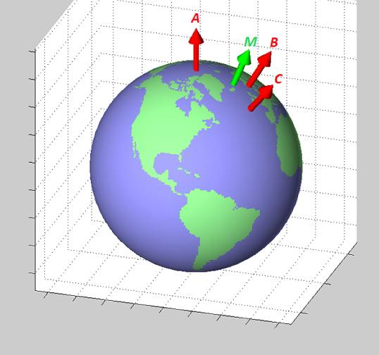

°# Genel Coğrafi Kordinat Kodları, HTML5, Javascript, Python
Mesafe hesabı yapmak
İki enlem, boylam kordinatı arasında mesafe hesabı için geopy kullanılabilir.
import geopy.distance
dist = geopy.distance.vincenty((51.238689, 4.406747),(51.232246, 4.444266))
print (dist)
print (dist.km)
İkinci ifade float tıpınde mesafeyi verir, kilometre bazlıdır.
Ya da
from pygeodesy.sphericalNvector import LatLon
p1 = LatLon(lat1, lon1)
p2 = LatLon(lat2, lon2)
p1.distanceTo(p2)
İki nokta arasında birinciden ikinciye olan açısal yön (bearing),
def get_bearing(lat1,lon1,lat2,lon2):
dLon = lon2 - lon1;
y = math.sin(dLon) * math.cos(lat2);
x = math.cos(lat1)*math.sin(lat2) - math.sin(lat1)*math.cos(lat2)*math.cos(dLon);
brng = np.rad2deg(math.atan2(y, x));
if brng < 0: brng+= 360
return brng
Sonuç 0 derece kuzey olmak üzere 0-360 derece arasında saat yönüne doğru artacak şekilde açı.
Bir kordinattan "10 km doğuya, batıya, vs. adım atınca nereye geliriz?" sorusunun cevabı için
import geopy
import geopy.distance
# baslangic noktasi
start = geopy.Point(48.853, 2.349)
# mesafe 1 km
d = geopy.distance.VincentyDistance(kilometers = 1)
# derece olarak adim atilacak yon, 0 derece kuzey, 90 dogu, ..
reached = d.destination(point=start, bearing=0)
print (reached.latitude)
print (reached.longitude)
Ya da
from pygeodesy.sphericalNvector import LatLon
clat,clon=39.06084392603182, 34.274201977299
DIST = 1000
p1 = LatLon(clat,clon)
EARTH_RAD = 6371
upright = p1.destination (DIST, bearing=45, radius=EARTH_RAD)
lowleft = p1.destination (DIST, bearing=225, radius=EARTH_RAD)
print ( upright )
print ( lowleft )
45.090707 N, 043.281808 E
32.450607 N, 026.747624 E
Örnekte Anadolu ortasından başlayıp 45 derece kuzeydoğuya ve 225 derece güneybatıya 1000 km adım atınca nereye geldiğimizi görüyoruz.
Orta Nokta
Bir GPS kordinat listesinin orta noktasını bulmak için, su bağlantıdan, enlem, boylam bir üç boyutlu vektör haline getiriliyor, ve Kartezyen bazlı bu vektörlerin ortalaması doğru ortalamayı veriyor. Kodun temel aldığı makale [1].

Grafiğe bakarsak yeryüzünde üç noktayı temsil eden A,B,C vektörleri bulunmuş bu vektörlerin her biri üç acı üzerinden temsil edilecek, ve eğer üç boyuttaki vektörlerin ortalamasını alırsak rahatlıkla M vektörünü bulabiliriz, çünkü vektörleri işaretlerinden tutun onların kapsamları aritmetiksel işlemler için uygundur. Kıyasla biri -90/+90 arasında diğeri -180/+180 arasında gidip gelen iki sayının aritmetiksel ortalamasının yeryüzünün her noktasında doğru sonucu vermesi zordur. Biri -90 sınırının bir tarafı diğeri öteki tarafında olan iki noktayı düşünebiliriz mesela..
Kodlama alttaki gibi olabilir,
import numpy as np
import numpy.linalg as lin
E = np.array([[0, 0, 1],[0, 1, 0],[-1, 0, 0]])
def lat_long2n_E(latitude,longitude):
res = [np.sin(np.deg2rad(latitude)),
np.sin(np.deg2rad(longitude)) * np.cos(np.deg2rad(latitude)),
-np.cos(np.deg2rad(longitude)) * np.cos(np.deg2rad(latitude))]
return np.dot(E.T,np.array(res))
def n_E2lat_long(n_E):
n_E = np.dot(E, n_E)
longitude=np.arctan2(n_E[1],-n_E[2]);
equatorial_component = np.sqrt(n_E[1]**2 + n_E[2]**2 );
latitude=np.arctan2(n_E[0],equatorial_component);
return np.rad2deg(latitude), np.rad2deg(longitude)
def average(coords):
res = []
for lat,lon in coords:
res.append(lat_long2n_E(lat,lon))
res = np.array(res)
m = np.mean(res,axis=0)
m = m / lin.norm(m)
return n_E2lat_long(m)
n = lat_long2n_E(30,20)
print (n)
print (n_E2lat_long(np.array(n)))
# fransa ve libya ortasi
coords = [[30,20],[47,3]]
m = average(coords)
print (m)
Üstteki işlemleri yapan bir paket te var,
from pygeodesy.sphericalNvector import LatLon
b = LatLon(45, 1), LatLon(45, 2), LatLon(46, 2), LatLon(46, 1)
nvecs = np.array([a.toNvector() for a in b])
print (nvecs)
mid = nvecs.mean().toLatLon()
print (mid.lat, mid.lon)
[Nvector(0.707, 0.01234, 0.70711) Nvector(0.70668, 0.02468, 0.70711)
Nvector(0.69424, 0.02424, 0.71934) Nvector(0.69455, 0.01212, 0.71934)]
45.50109067812444 1.5
<class 'pygeodesy.sphericalNvector.LatLon'>
(0.700656, 0.018347, 0.713264)
Nokta Bir Alan İçinde mi
Elde köşeleri bilinen bir üçgen, kare ya da dışbükey poligon var
diyelim, mesela Bermuda Üçgeni! Elimizdeki bir noktanın o alan içine
düşüp düşmediğini nereden bileceğiz? Burada iyi bir yaklaşım
pygeodesy paketi, bu paket üstteki n-vektör yaklaşımını kullanıyor,
yani sağlam. Bir örnek altta, dörk köşesi verilmiş alan içine 45.1,
1.1 noktasının düşüp düşmediğini soruyoruz,
from pygeodesy.sphericalNvector import LatLon
p = LatLon(45.1, 1.1)
b = LatLon(45, 1), LatLon(45, 2), LatLon(46, 2), LatLon(46, 1)
print (p.isenclosedBy(b))
DMS ve Ondalik Formatlar Gecisi
Bazen 000 00' 05.31''W ve 51 28' 40.12'' N şeklinde enlem ve
boylam verisi görebiliriz. Bu format yeri saat, dakika, saniye
üzerinden göstermektedir. Çevirmek için pygeodesy içinde gerekli
fonksiyonlar var,
from pygeodesy import parse3llh, fstr
x = parse3llh('000 00' 05.31''W, 51 28' 40.12'' N')
print (fstr(x, prec=6))
51.477811, -0.001475, 0.0
İlk iki sayı enlem ve boylamdır.
HTML5 ve Javascript ile Yer Bulmak
Javascript icinden yer bulmak mumkun, bu cep telefonunda da isliyor, Google'in Wifi, Telekom, GPS uzerinden yer bulan arayuzu ile baglantili zannederim. Kalitesini kontrol etmedim, ama alttaki kod isler ve yer rapor eder. Isletince tarayici 'yer bilgisine erisim' icin izin isteyecek. Izin verince (allow), bilgi sayfada basilacak ve kullanim ornegi olsun diye bir de URL baglantilardan birine parametre olarak eklenecek.
<html>
<script>
var lat = "lat";
var lon = "lon";
function getLocation() {
navigator.geolocation.getCurrentPosition(setPosition);
}
function setPosition(position) {
lat = position.coords.latitude;
lon = position.coords.longitude;
document.getElementById("locpos").innerHTML = lat + " " + lon;
document.getElementById("url1").href="/bir/baglanti/" + lat + ";" + lon;
}
</script>
<body onload="init()">
<div class="navmenu">
<nav>
<div id="locpos">
<p></p>
</div>
<ul>
<li><a id="grab" href="#" onclick='getLocation()'>Yer Bul</a></li>
<li><a id="url1" href="/bir/baglanti/32324">Baglanti</a></li>
<li><a id="vsvs" href="">Vs..</a></li>
</ul>
</nav>
</div>
</html>
İsimden Kordinat Bulmak
Bölge ve ülke ismi vererek dünyadaki pek çok yeri bulmak için geonames
sitesi kullanılabilir, http://www.geonames.org adresine gidilip bilgiler
girilince sonuçlar listeleniyor.
Script üzerinden bu bilgiyi nasıl çekeriz? Site URL parametresi olarak girdi kabul ediyor, eğer sonuçlardan ilkini çekip çıkartabilirek onu kordinat sonucu olarak alabiliriz. Mesela Ağrı Dağları icin
http://www.geonames.org/search.html?q=Agri+Mountain&country=TR
Script uzerinden
from pygeodesy import parse3llh, fstr
import urllib.request as urllib2, re
def geoname(keyword, ccode):
url = "http://www.geonames.org/search.html?q=%s&country=%s" % (keyword,ccode)
url = url.replace(" ","+")
print (url)
r = urllib2.urlopen(url).read()
content = r.decode('utf-8')
res = re.findall("Latitude.*?<td nowrap>(.*?)</td><td nowrap>(.*?)</td>",content, re.DOTALL)
if len(res)==0: return False,99999,999999
lats = res[0][1]; lons = res[0][0]
lats = lats[1:] + lats[0]
lons = lons[1:] + lons[0]
geos = lats + "," + lons
x = parse3llh(geos)
res = fstr(x, prec=6).split(",")
return True,float(res[0]),float(res[1])
print (geoname("Agri Mountain","TR"))
Sonuc
(True, 39.702222, 44.297778)
olarak çıkacak. İlk değer bir statü değeri, eğer veri işlemede problem çıkarsa problem bu şekilde iletilebilir.
Geocoder
Eğer üstteki yaklaşım fazla çetrefil gibi gözüküyorsa, geoçoder adlı
bir paket var,
import geocoder
g = geocoder.osm("Plymouth, MN")
print (g.latlng)
g = geocoder.osm("Istanbul, Turkey")
print (g.latlng)
g = geocoder.osm("Canakkale")
print (g.latlng)
[45.0065149, -93.46651]
[41.0091982, 28.9662187]
[40.0549886, 26.9278292]
Imajdan Kordinat Toplamak
Diyelim ki elimizde JPG üzerinde bir harita var, üzerinde bir sınır gösterilmiş, ve oradan sınır verilerini toplamak istiyoruz. Alttaki basit GUI kodu şunu yapar 1) Parametre olarak geçilen resmi gösterir, 2) O resim üzerinde yapılacak fare tıklamalarının x,y piksel kordinatlarını ekrana basar. Bu sayede çıplak gözle sınıra bakarız, üzerine tıklarız, ve kordinatlarını "geriye mühendislik" ile toplamış oluruz.
from PIL import ImageDraw, Image, ImageTk
import sys, tkinter
window = tkinter.Tk(className="bla")
image = Image.open(sys.argv[1])
print ('size',image.size[0],image.size[1])
image = image.resize((int(1000), int(700)), Image.ANTIALIAS)
canvas = tkinter.Canvas(window, width=image.size[0], height=image.size[1])
canvas.pack()
image_tk = ImageTk.PhotoImage(image)
canvas.create_image(image.size[0]//2, image.size[1]//2, image=image_tk)
def callback(event):
print ("[%d,%d]," % (event.x, event.y))
canvas.bind("<Button-1>", callback)
tkinter.mainloop()
Gerekli paketi kurmak için sudo apt ınstall python3-tk yeterli.
Tabii nihai kordinatlar için ek bir adım daha gerekli, piksel
değerlerini alıp enlem, boylama çevirmek; bu hesap için enlem
boylamını bildiğimiz iki piksel değeri yeterli. Alttaki gibi bir kodla
bu transformasyon yapılabilir. Referans iki kordiate değeri refc,
ona tekabül eden iki piksel x,y değeri refp içinde, ve toplanan
tüm piksel değerleri bir liste olarak clicks içinde.
def platlon(refc, refp, clicks):
mlat = (refc[1,0]-refc[0,0]) / (refp[1,1]-refp[0,1])
mlon = (refc[1,1]-refc[0,1]) / (refp[1,0]-refp[0,0])
cs = [ [ refc[0,0]+(y-refp[0,1])*mlat, refc[0,1]+(x-refp[0,0])*mlon ] for x,y in data ]
return cs
Kaynaklar
[1] Kenneth Gade (2010), A Non-singular Horizontal Position Representation, The Journal of Navigation, Volume 63, Issue 03, pp 395-417, July 2010.